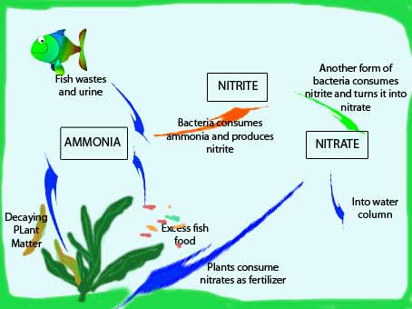

CYCLING
HOW DO I CYCLE THE AQUARIUM? WHAT IS CYCLING?
Cycling is the most important part of setting up your new tank. But don’t worry! Much of the cycling process is automated.
Cycling only requires patience and consistent testing of the aquarium water. This guide breaks down aquarium cycling into
a few key steps.
Before cycling you will need to ensure you have a proper freshwater test kit. The
Freshwater Master Test Kit
is a reputable and reliable brand that most beginners and experts use in their aquariums. A test kit is required to monitor ammonia
levels and test for nitrate spikes. It will let you know when you can safely add more fish to the aquarium.
Why is cycling
so important? Fish waste and excretion release ammonia into the water column and ammonia kills fish. Bacteria within the filter
media will convert this ammonia to nitrite which is even more toxic than ammonia. Fortunately another type of bacteria in the
filter will consume the nitrites and convert them into nitrates. Nitrates are not toxic to your fish at low levels. To put it
simply, Ammonia (toxic) is converted to nitrite (toxic) is then converted to
nitrate (non-toxic). This process will only happen after cycling.
This is why cycling the tank is so
important, it produces bacteria in the filter that will support your fish economy by neutralizing their waste and making the
aquarium habitable. Interestingly higher concentrations of nitrates are not healthy for your fish either. Too higher levels
will lead to loss of colour/appetite and also algae blooms. Water changes are an important part of aquarium care and will
prevent high buildup of nitrate.


Adding Hardy Fish
- You will need to add a few fish to the aquarium to produce ammonia that the bacteria feed on. These fish should be hardier
species that you would like to keep for the long term.
- Barbs such as tigers and cherries are a hardier species and are
excellent for a heated tropical tank. Danio’s are a good choice for coldwater.
- You should add roughly 1.5 fish per 10 gallons of water, so for a 10g - 2 fish would be appropriate. For 20g – 3 fish would be
appropriate etc. You do not want to overstock the tank at this early stage as the bacteria that consume ammonia are just
beginning to propagate. It is very important to keep the tank understocked. The fish currently in the tank will be undergoing
some stress as they experience elevated ammonia levels.
- Adding too many fish can lead to excess waste. If your bacteria
colony is not ready your ammonia levels will spike. This can result in the death of your fish.

Alternative | Fishless cycling
- Fishless cycling has become the more correct way of cycling the aquarium.
This is because cycling with fish can be seen as cruel as spiking ammonia levels can be damaging to fish health.
- Fish waste adds ammonia to the water which can kick starts the bacteria growth. This can be replicated by adding ammonia
directly to the aquarium.
- Initially 2-4ppm of ammonia level should be added, with small ammounts added each few days. The rest of this guide should be
followed in the same manner without fish.

Upkeeping Fish
- The fish will probably be stressed as they carry the brunt of the cycling process. A good way to reduce the amount of
ammonia is to do small water changes every few days. About 10-15% should be changed, any more and you will be taking away
the ammonia and nitrite that the bacteria are trying to feed on.
- Ensure a de-chlorinator has been added to the water.
Any chlorine/chloramines will kill the bacteria and ruin the cycling process.
- Feeding the fish should be done carefully and sparingly. Excess, left over food will add to the ammonia and nitrite that are
already present.

Ending the Cycle
- This process will take anywhere from 2 – 8 weeks. The key here is not stocking too many fish or going with a fishless cycle.
Completing the steps successfully will likely result in early cycle completion. After the second or third week the aquarium
water should be tested. Either do this yourself or find a pet store to test it for you. Test the levels of both ammonia
and nitrite.
- The nitrite should spike around the second week of cycling. After this it will begin to convert to
nitrates. When the nitrite has spiked and fallen to 0ppm (anywhere from 2-8 weeks) you are able to add more fish into
the aquarium (very slowly). Ensure your ammonia and nitrites are 0ppm at this point in time. Do this slowly as there is
limited bacteria in the filter. Adding new fish too quickly can spike ammonia levels and result in a mini-cycle.

End of the Cycle
- Once the nitrite and ammonia are stable at 0ppm, you can feel more comfortable purchasing more expensive or exotic fish.
For intermediate enthusiasts, angelfish and gouramis are a good choice.
- If after 8 weeks the ammonia levels have not dropped you should consult your local fish store. It is likely due to
inadequate filtration, overpopulation or over-feeding.
Even More Useful Notes
- During the cycle be sure not to add any chemicals that reduce or remove ammonia. These are counterproductive because the beneficial bacteria need this to feed!
- If doing a cycle with fish (fishless is always recommended) You may endure the death of a fish during the cycling period. This is not unsusual but the risk can be reduced by maintaining the 10-15% water changes every couple of days to remove excess waste.
- Whether fish or fishless cycling try not to be impatient and hold off adding any extra fish before the tank has completed its cycle. This will only slow the cycling process. It will also lead to an excessive ammonia build up possibly leading to more fatalities.
- If you already have an established aquarium, you may wish to use some of the filter medium or substrate from that aquarium. This can kickstart your bacteria culture and reduce the waiting period for the cylce to end. This will not skip the cycling process, only shorten it.
- Feel free to add plants during the cycling stage, these will often consume excess nitrates and lead to a healthier tank post-cycling. They will not be affected by the rising ammonia during the cycle. Be sure to remove any decaying leaves or stems within the aquarium as these will further increase ammonia levels.
Now that you have successfully bought and constructed your very first aquarium, you are an accomplished aquarist. Why not impress your friends and family by turning your aquarium into a natural planted aquarium. Aquatic plants grow and live in the aquarium and make any aquascape truely beautiful. Click on the link below and continue.